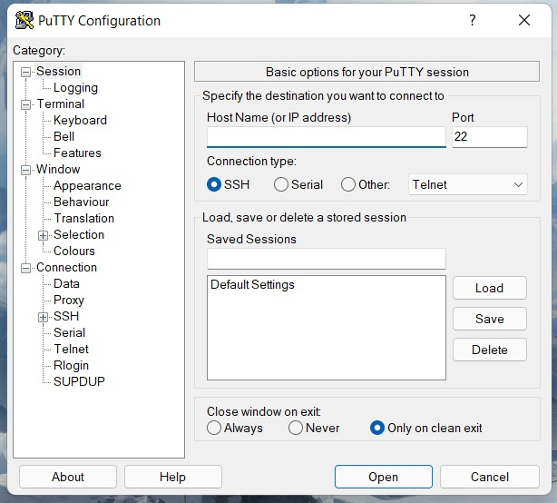
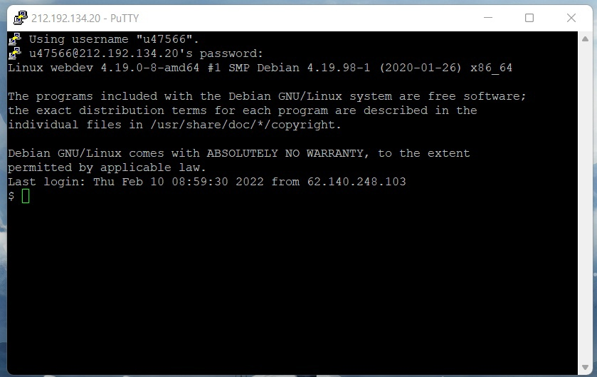
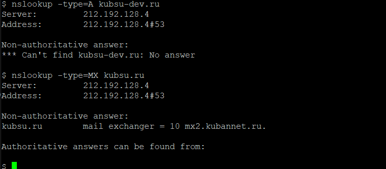
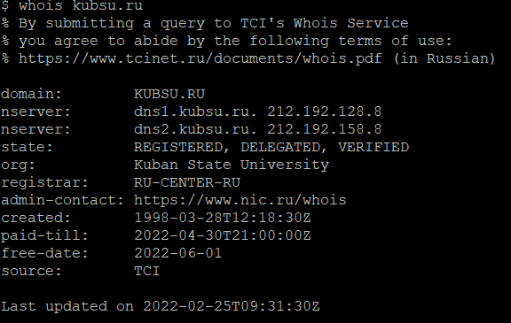
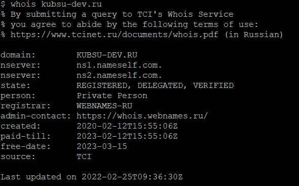
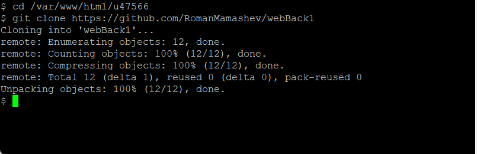
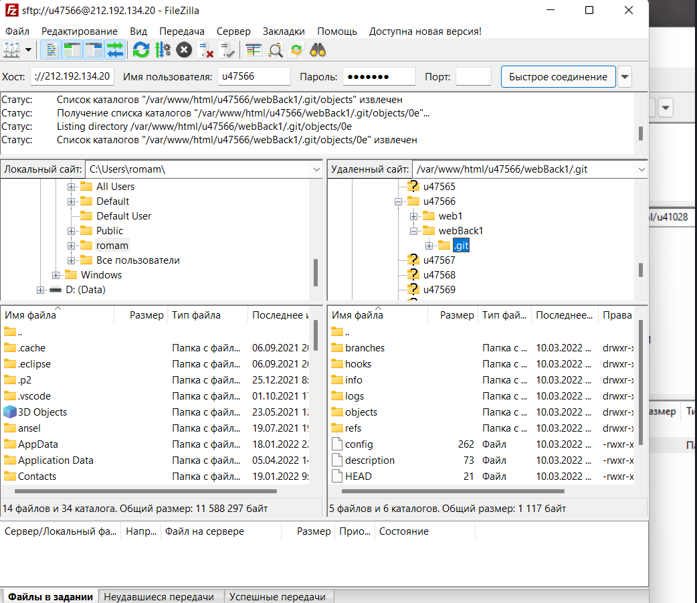

Подключение к учебному серверу 212.192.134.20 по SSH с помощью клиента Putty.
> 
Авторизация
> 
Вызов команды ping. Отправляет пакеты по протоколу ICMP на выбранный сервер для
проверки качества соединения с ним. IP сервера kubsu. ru 212.192.128.92
> 
Вызов команды nslookup. Это инструмент сетевого администрирования для запросов в доменной
системе имен (DNS) с целью получения доменного имени, IP-адреса
или другой информации из записей DNS.
> 
Команда whois kubsu.ru

Команда whois kubsu-dev.ru

Клонирование репозитория из GitHub на сервер командой git clone

6. FTP (протокол передачи данных по сети) соединение через программу FileZilla. Копирование файлов находящихся на сервере на локальный компьютер
